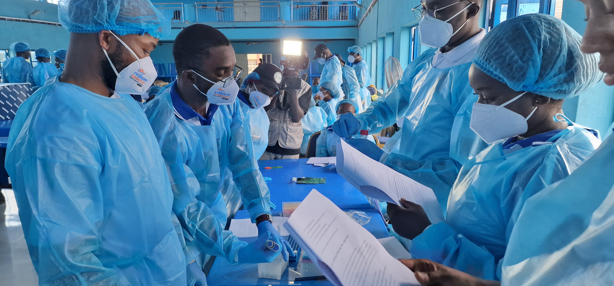
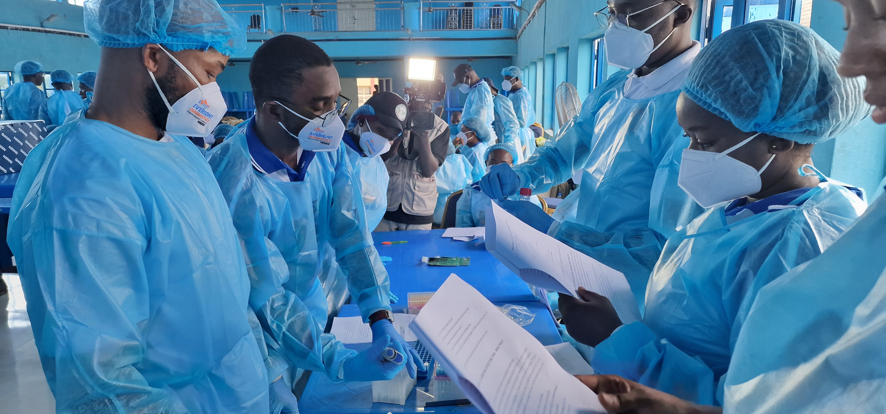

Learn more about our organization, our team, and our commitment to preventing public health crises worldwide.
The Society for Disease Prevention is a nonprofit organization committed to preventing public health crises and infectious disease outbreaks through education and community engagement. With a team of licensed medical professionals and dedicated volunteers, we work locally and across Africa to build healthier, informed communities.
Since our founding in 2018, we have impacted over 5,000 lives across 4 countries through more than 10 different projects. Our entirely volunteer-run organization focuses on health research, advocacy, community outreach, and providing medical consultations to those who need it most.
"Despite significant progress against HIV/AIDS and Malaria; death and disability from the infection remain very high, especially in some poor and less developed nations, such as Malawi, Nigeria, Kenya and South Sudan. SFDP through various coordinated efforts targeting community health has partnered with several organizations to provide free and quality health care to our various communities in Africa, and in the central Pennsylvania area, including local churches, elderly homes, and shelters for the homeless."
— Dr. Kennedy Alajemba, FounderWe don't just raise awareness — we work hand-in-hand with communities to create lasting change where it truly matters.
We simplify health topics into everyday language so people can make better health decisions.
We provide hands-on support and guidance so no one faces health struggles on their own.
We connect people with tools and support to grow healthier, stronger, and safer communities.
We deliver medical supplies and aid to places where health access is limited or unequal.
From a small group of passionate healthcare professionals to a global network of volunteers and partners, our journey has been one of growth, impact, and unwavering commitment to public health.
Society for Disease Prevention was established as an IRS 501(c)(3) nonprofit organization in Pennsylvania.
Launched emergency food relief programs supporting families in Nigeria and Pennsylvania during the pandemic, while expanding operations across multiple African countries with the Africa AIDS Project.
Conducted rapid disease screenings across 6 rural communities, growing our impact through practicum partnerships with universities and academic institutions.
Expanded our team and hit 100+ educational resources, reaching over 500K views on social media and 300K+ on YouTube alone.

 

We collaborate with organizations, healthcare institutions, and community groups to expand our reach and effectiveness.

Whether you're a healthcare professional, student, or passionate individual, there's a place for you in our organization.